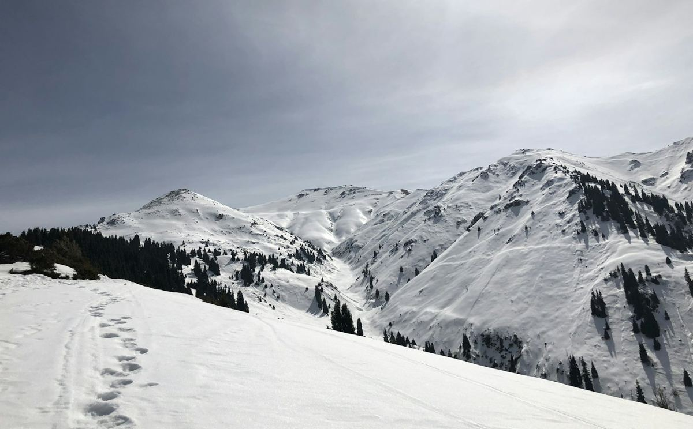

Best December Holidays from Mumbai: Where to Go This Winter

December is the busiest travel month for Mumbai families – schools close, the weather is pleasant almost everywhere and the festive mood is in the air. Here are the destinations we recommend most, from our 45+ years of planning winter holidays.
Snow holidays in India
Kashmir – Gulmarg, Sonamarg and Pahalgam
If your family wants to see real snow, Kashmir in December and January is hard to beat. Gulmarg usually has snow for sledging and the Gondola cable car, while a shikara ride on Dal Lake in Srinagar is a must. Pack proper winter wear – temperatures drop well below zero at night.
Himachal – Manali and Shimla
Manali, Solang Valley and Shimla are easy, family-friendly snow trips, and can be combined with a relaxed stay in Kullu or Dharamshala. Snowfall timing varies year to year, so we keep plans flexible and pick hotels with good heating.
Sunny and pleasant in India
Rajasthan
Winter is the best time for Udaipur, Jaipur, Jodhpur and Jaisalmer – cool mornings, sunny afternoons and evenings in the desert under the stars. Perfect for families with grandparents, as the pace can be kept easy.
Kerala
Munnar's tea gardens, a houseboat night in Alleppey and the beaches of Kovalam make a gentle, relaxing family trip. December weather in Kerala is comfortable and green after the monsoon.
Goa and the Andamans
For beaches, Goa is the quickest getaway from Mumbai, and the Andaman Islands (Havelock and Neil) offer clear water and calm beaches – great for a honeymoon or a family with older kids.
Short-haul international from Mumbai
- Dubai – the best weather of the year, theme parks, desert safari and the Global Village season. Direct flights from Mumbai are short.
- Thailand – Bangkok, Pattaya, Phuket and Krabi are in their dry season in December.
- Singapore and Malaysia – excellent for families with young children; vegetarian food is easy to find.
- Vietnam – Hanoi, Ha Long Bay and Da Nang are rising favourites for couples and groups.
- Europe – for Christmas markets and winter scenery in Switzerland, Austria and Germany. Plan the Schengen visa early, as December appointments fill up fast.
Our tips for December travel
- Book early. December, Christmas and New Year dates sell out first – flights and good hotels go quickly.
- Check passports and visas now. Passports should usually be valid for at least six months from your return date.
- Take travel insurance, especially for snow destinations and senior citizens.
- Ask about food. We arrange pure vegetarian and Jain meals on most of our tours.
Not sure where to go? Tell us your dates, who is travelling and what your family enjoys – we'll suggest the best options and plan everything for you.
Frequently asked questions
Which place is best for snow in December from Mumbai?
Kashmir (Gulmarg and Sonamarg) and Himachal (Manali, Solang Valley) are the most popular snow destinations in December. Snowfall varies each year, so we plan flexibly.
Which international destination is good in December for families?
Dubai, Singapore, Thailand and Malaysia are popular December choices from Mumbai – short flights, pleasant weather and plenty for children to do.
When should I book a December holiday?
As early as possible. December, Christmas and New Year are peak dates, so flights and good hotels fill up quickly.
Plan your next holiday with us
Tell us where you want to go – we'll handle the rest. No obligation.